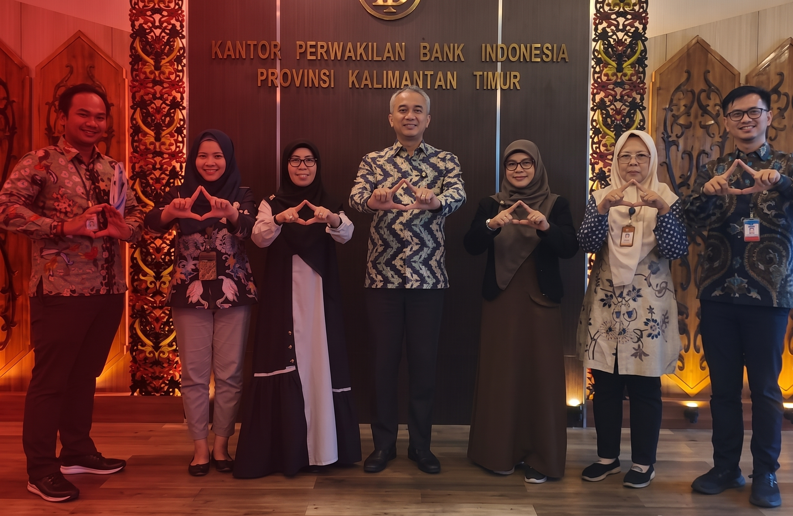

Mitra Program
Menjalankan program bersama PERI, dari pelatihan hingga pendampingan peserta.
Ajukan kolaborasiUmpan balik adalah cara Anda ikut menjaga kualitas program PERI. Setiap saran, kritik, dan pertanyaan kami baca bersama tim, lalu kami tindak lanjuti agar program semakin bermanfaat bagi perempuan di Samarinda.
Ide untuk program, jadwal, atau layanan yang bisa kami kembangkan.
Masukan jujur tentang hal yang belum berjalan baik agar kami bisa memperbaikinya.
Tanyakan seputar program, pendaftaran, atau kegiatan PERI.

PERI terbuka untuk bekerja sama dengan komunitas, lembaga, dan individu yang ingin ikut memberdayakan perempuan. Berikut bentuk kolaborasi yang bisa Anda pilih.
Menjalankan program bersama PERI, dari pelatihan hingga pendampingan peserta.
Ajukan kolaborasiBagikan waktu dan keahlian Anda untuk mendampingi peserta program.
Ajukan kolaborasiDukungan pendanaan atau sumber daya untuk keberlanjutan program.
Ajukan kolaborasiKegiatan bersama, jejaring, dan pertukaran pengetahuan antar organisasi.
Ajukan kolaborasiPengalaman peserta dan pengunjung. Hanya umpan balik yang sudah ditinjau dan disetujui admin yang ditampilkan di sini.
Punya pertanyaan seputar program, ingin berkolaborasi, atau sekadar memberi masukan? Tim kami siap membantu.
Isi formulir berikut, tim kami akan membaca dan menindaklanjuti pesanmu.